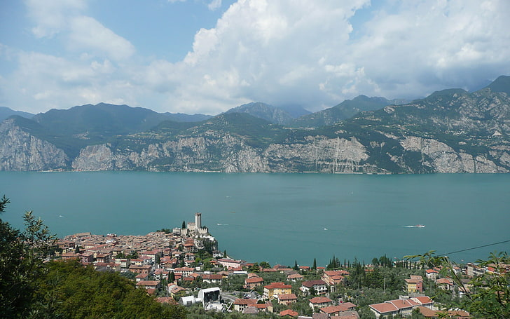

На перший погляд, місто в Італії Мальчезіні на озері Гарда - звичайнісінький озерний курорт, але це тільки для тих, хто ще не побував у цьому місті. Ті ж, хто там хоч раз був, з радістю згадуватимуть його. Обрамлений вічною зеленню олив, кипарисів та олеандрів, він знаходиться біля підніжжя гори Бальдо, у східній частині озера Гарда. Всю красу цих місць словами не передати, адже не дарма місцеві жителі називають порівняно невеликий населений пункт перлиною Гарди. Місто розташоване всього в 40 км від Верони і в 120 км від Венеції, а завдяки добре розвиненій транспортній системі ви легко зможете дістатися в потрібне вам місце. Таким чином, ви можете зняти готель у самому Malcesine або зупинитися у Вероні чи Венеції. Готелі Мальчезіні пропонуються на будь-який смак.
Costaripa розташований у самому серці долини Вальтенезі в Моніга-дель-Гарда, в оточенні виноградників. Історія сімейної виноробні почалася 1936 року і ось уже три покоління цьому сільськогосподарському підприємству вдається тримати високу планку якості. Тут трепетно ставляться до своїх традицій і не бояться вдаватися до високих технологій, гостинно зустрічають гостей та пропонують кілька варіантів дегустацій. Costaripa спеціалізується на рожевих винах, для яких використовується виноград сорту «Гроппелло».
Найпопулярнішою пам'яткою серед туристів є фунікулер, особливість якого полягає в тому, що це єдина в світі канатна дорога, що має кабінки, що обертаються. Поки ви підніметесь нагору, кабінка зробить 1-2 обороти. Маршрут має 2 ділянки. Перший – до містечка Сан Мікеле, має довжину понад півтора кілометри і підніме вас на висоту 463 метри. Другий - Сан Мікеле - Монте Бальдо, 2813 метрів завдовжки, який піднімається на кілометр. Там ви зможете побачити всю красу озера і за 15 хвилин із субтропіків перенестись у прохолоду альпійських вершин.
Вирішивши піднятися нагору на фунікулері, не забудьте прихопити із собою щось тепле з одягу. Фунікулер не єдина визначна пам'ятка цього куточка.
Найпопулярнішою пам'яткою серед туристів є фунікулер, особливість якого полягає в тому, що це єдина в світі канатна дорога, що має кабінки, що обертаються Поки ви підніметесь нагору, кабінка зробить 1-2 обороти. Маршрут має 2 ділянки. Перший – до містечка Сан Мікеле, має довжину понад півтора кілометри і підніме вас на висоту 463 метри. Другий - Сан Мікеле - Монте Бальдо, 2813 метрів завдовжки, який піднімається на кілометр. Там ви зможете побачити всю красу озера і за 15 хвилин із субтропіків перенестись у прохолоду альпійських вершин. Вирішивши піднятися нагору на фунікулері, не забудьте прихопити із собою щось тепле з одягу. Фунікулер не єдина визначна пам'ятка цього куточка.
Є в містечку Мальчезіні готелі з чудовим видом на озеро Гарда, від дешевих до дорогих, в яких можна зупинитися на період перебування від відпочинку. Докладніше про них читайте у розділі «Готели».
